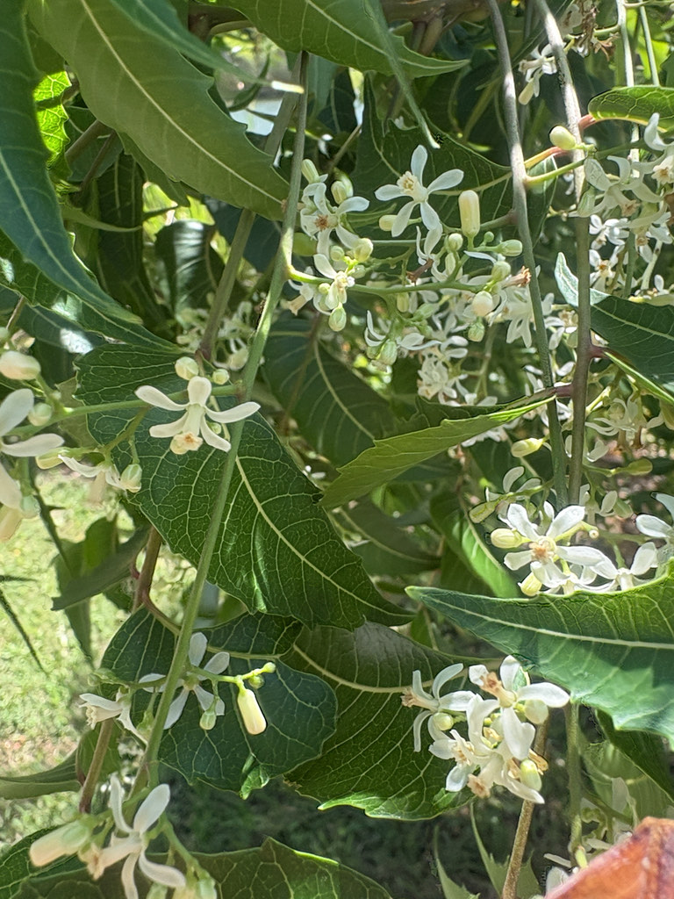

- The same compound that makes neem oil a garden pesticide — azadirachtin — comes from this tree's seeds. It doesn't kill insects outright; it scrambles their hormones so they stop feeding, stop developing, and never reach adulthood. Humans figured out how to bottle that trick, but the tree has been running it for millions of years.
- In East Africa, neem is called mwarubaini — Swahili for 'the tree that cures forty diseases.' Bark, leaves, seeds, flowers, and roots have all been used in traditional medicine across Asia and Africa, making it one of the most thoroughly used trees on the planet.
- Neem seeds lose their ability to germinate in roughly thirty days. That narrow window has shaped how the tree spreads — and why it hasn't naturalized aggressively in Florida the way some other exotics have.
- The genus Azadirachta contains just two species. Neem is the famous one; its close relative, Azadirachta excelsa, grows in Malaysia and the Philippines and is far less known outside its home range.
Neem is native to the dry deciduous and tropical forests of the Indian subcontinent — primarily India, Bangladesh, and Myanmar — and extends into parts of mainland Southeast Asia. It is one of only two species in the genus Azadirachta, both of which are native to the Indomalaysian region.
The tree has been cultivated across South Asia for at least four thousand years, valued from the start for timber, medicine, and practical everyday use. Trade routes carried it into Africa, the Middle East, Australia, the Caribbean, and eventually the Americas.
In Florida it is grown as an ornamental and shade tree in the southern and central parts of the state, where the subtropical climate suits it reasonably well.
- Neem belongs to the mahogany family, Meliaceae, which puts it in company with some notable neighbors: mahogany itself, chinaberry (Melia azedarach), and the West Indian mahogany planted throughout Florida streetscapes. The family connection is visible in the pinnate leaves — the long stems lined with paired leaflets are a shared family trait.
- The genus name Azadirachta traces to the Persian phrase azad dirakht, meaning 'free' or 'noble tree,' a name that reflects the tree's reputation for self-sufficiency and broad utility. The species epithet indica simply marks its Indian origin. The genus was formally established by the French botanist Adrien-Henri de Jussieu in 1830.
- In India and across its native range, neem has been woven into daily life for millennia. Twigs served as toothbrushes long before commercial dental products existed, and the bark, leaves, flowers, seeds, and fruit have each found medical or agricultural application.
- After oil is pressed from the seeds, the remaining seed cake is used as both livestock fodder and soil fertilizer — almost nothing is wasted.
- In Florida, neem stays considerably smaller than it does in its native tropical homeland. A Richard Lyons Nursery profile specific to South Florida notes the tree rarely exceeds 30 feet here, compared to the 50 to 65-foot range it can reach in richer tropical soils.
- Cold sensitivity is the main limiting factor — neem handles drought well but is not frost-hardy, and Bradenton sits near the northern edge of where it can be grown outdoors without protection.
When neem blooms, the drooping clusters of small white flowers draw bees and other generalist pollinators in noticeable numbers — the blossoms are fragrant and produced in large quantities, sometimes exceeding two hundred flowers per inflorescence. Birds will take the small, olive-like drupes once they ripen to yellow.
Neem has no co-evolutionary history with Florida's native insects, so it does not serve as a larval host for local butterflies or moths.
There is an irony worth knowing: the azadirachtin concentrated in neem's seeds is one of the most widely used botanical insect growth disruptors in organic gardening, specifically targeting caterpillars. Visitors looking for the park's best butterfly habitat will find it among the native plantings.
Propagated primarily by seed, though cuttings, grafting, and tissue culture are also used in nursery production. Seeds are unusual in having a very short viability window — roughly thirty days after the fruit ripens — which limits how far and how readily the tree can naturalize beyond planted sites.
Small, white, and five-petaled, produced in large drooping compound clusters up to about ten inches long. A single inflorescence can carry more than two hundred flowers and the blooms are noticeably fragrant. Flowering in Florida typically occurs in late winter to spring.
A smooth drupe — a stonefruit like a small olive — roughly half an inch to one inch long, green ripening to yellow. The pulp is fibrous and distinctly bitter-sweet. Each fruit contains one or two seeds; the seeds are the source of neem oil.
Pinnately compound, eight to sixteen inches long, with twenty to thirty toothed leaflets each one to three and a half inches long. Leaves are dark green at maturity; new growth emerges with a reddish flush. The tree is largely evergreen but may shed leaves briefly in response to drought or cold stress.
Trunk is straight with moderately furrowed, gray-brown bark. Branches are wide-spreading, building toward a dense, rounded crown that can eventually approach the width of the tree's height.
The leaves are the easiest starting point — long, arching stems lined with pairs of toothed, dark green leaflets, with any fresh growth showing a reddish tint. The crown is dense and rounded, giving the tree a full, shady presence even at modest heights.
In late winter or spring, look for the drooping flower clusters hanging from the branch tips — fragrant enough that you may smell them before you see them. When fruit is present, small olive-shaped drupes hang in clusters, green to yellow depending on ripeness.
The fruit pulp is edible in its native range — bitter-sweet and fibrous, eaten fresh or cooked in parts of South Asia — but concentrated neem seed oil and seed extracts can be harmful if ingested in quantity and are not food products. Casual contact with the tree is harmless.
The ASPCA does not list Azadirachta indica as toxic to dogs or cats; no significant toxicity from touching or incidentally mouthing the leaves or fruit is documented for pets at typical exposure levels. If an animal has eaten a large amount of seeds or seed material, consult your veterinarian.
Neem is cold-sensitive and should be considered marginally hardy at Bradenton's latitude (USDA Zone 9B-10A). Established trees can tolerate brief cool spells, but a hard frost will cause significant dieback. The specimen here is a useful indicator of how the tree performs at the northern limit of its Florida range.
Despite its reputation as a multipurpose tree, neem is not widely planted by Florida native-plant gardeners — its value here is more as a living demonstration of a globally significant economic species than as a wildlife plant. Its real horticultural story is the chemistry locked in its seeds.


- © Maria Escobar (CC-BY-NC), via iNaturalist
- © Joanne Walker (CC-BY-NC), via iNaturalist
- © Denise Sosa (CC-BY-NC), via iNaturalist
- © Randall Carter (CC-BY-NC), via iNaturalist